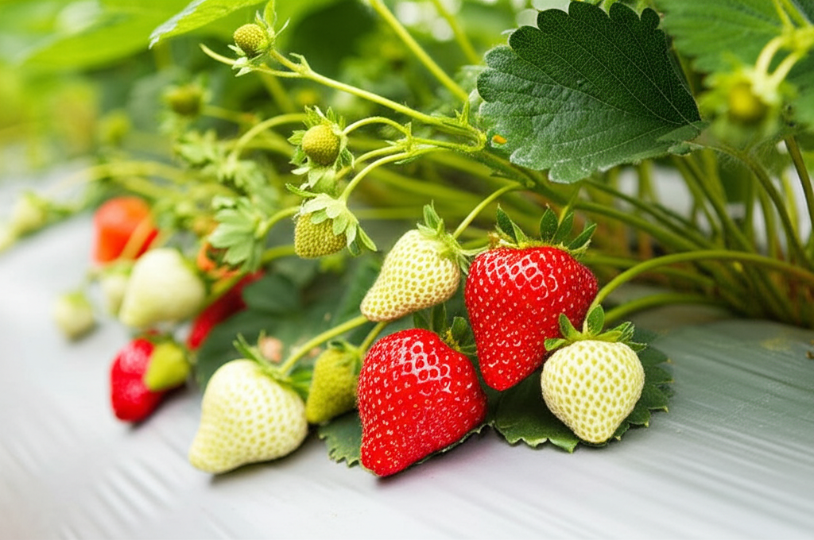

Guide to grow {{message}}
{{punDescription}} 
{{shortDescription}}
{{message}} needs {{sunlight}} hours of sunlight in a day.
Max: 12 hours of sunlight in a day.
{{shortDescription}}
Max: 12 hours of sunlight in a day.
*AI image might not be entirely accurate, but it's darn close!
